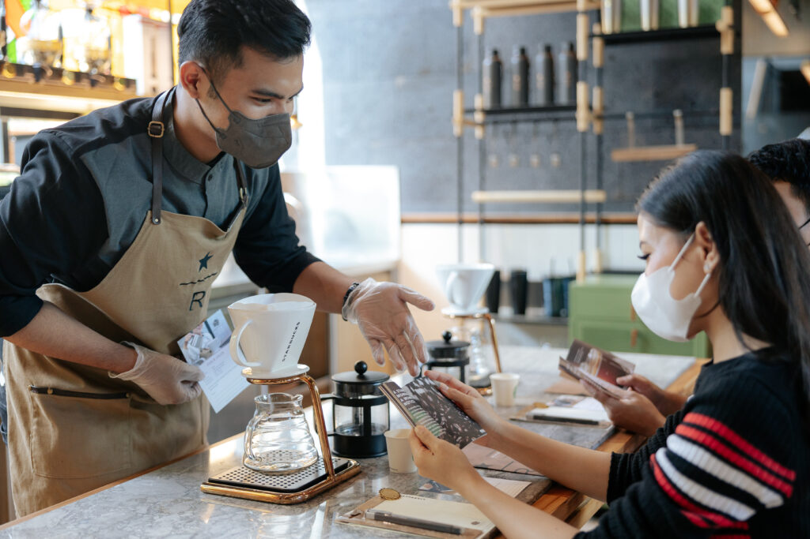

Cerita di Balik KopiKita
Konsep kedai kopi fiktif untuk tugas pemrograman internet.
Sejarah Singkat
KopiKita dibayangkan berawal dari sebuah ruang kecil tempat teman-teman berkumpul sambil menikmati kopi. Dari obrolan sederhana itu lahirlah gagasan kedai yang ramah dan terjangkau bagi semua kalangan. (Cerita ini fiktif untuk keperluan tugas.)
Filosofi Nama
“Kopi” adalah minumannya, “Kita” adalah kebersamaan. Setiap cangkir dinikmati bersama.

Visi
Menjadi kedai kopi yang menghadirkan kehangatan dan cerita bagi setiap pengunjung.
Misi
Menyajikan kopi berkualitas, harga ramah, pelayanan tulus, dan tempat yang nyaman.
Keunggulan
Biji pilihan, barista ramah, menu beragam, dan suasana estetik.